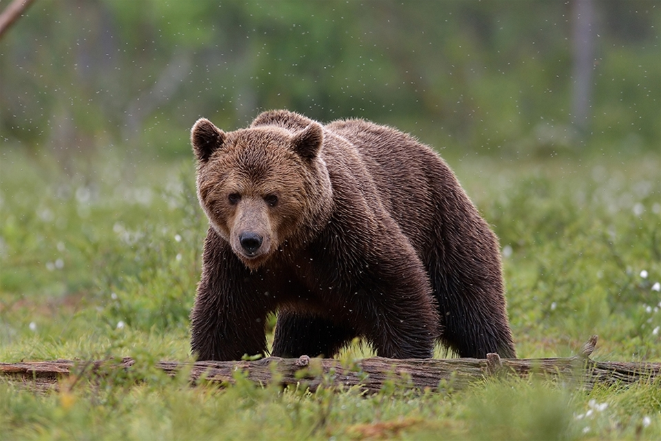

Björnen
Konfidensintervallet är 2 771–2 980 björnar i Sverige och spannet visar på den osäkerhet som finns i populationsuppskattningen. De yttre värdena i intervallen är mindre sannolika än medelvärdet. Det är ungefär lika många björnar som det var år 2013 då den förra nationella populationsberäkningen gjordes och som visade ett resultat på ca 2 800 björnar.
Under 2017 sköts knappt 300 björnar i skydds- och licensjakt vilket motsvarar ca 10 procent av populationen 2017.
Populationsberäkningen är grundad på de spillningsinventeringar som genomförts i respektive län och trender i de björnobservationer som jägarna samlat in. Jägarnas omfattande bidrag till de regionala spillningsinsamlingarna är en viktig del i slutresultatet.